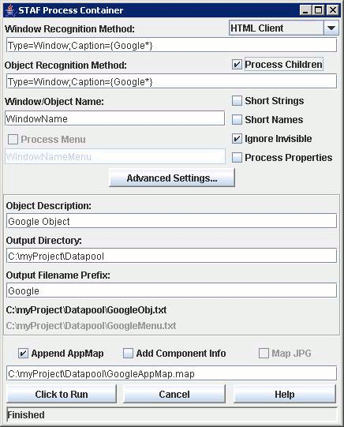

public class STAFProcessContainer
extends javax.swing.JFrame
implements java.awt.event.ActionListener, javax.swing.event.DocumentListener, javax.swing.event.ListSelectionListener, java.lang.Runnable

Client Type (ComboBox)
The type of client (HTML, Java, .NET, etc..) intended to be processed.
Window Recognition Method (TextField)
The recognition string identifying the topmost Window to process.
Object Recognition Method (TextField)
The recognition string identifying a particular object within the Window to process.
To process all components in the Window this recognition string must be the same as
the Window Recognition Method.
Process Children (CheckBox)
Process the full hierarchy of children of the object to be processed. This can be
time consuming on complex containers. If not selected we will not delve into
processing the children.
Window/Object Name (TextField)
The name to give the object to be processed. This is primarily for App Map and other
forms of output that attempt to provide friendly names for objects.
Short Strings (CheckBox)
Shorten recognition strings. Do not include each and every layer of the object hierarchy
in the recognition strings generated for App Maps.
Short Names (CheckBox)
When an object is identifiable by Name output very short recognition strings.
This is because objects with unique names are safely identified wherever they are in
the hierarchy.
Ignore Invisible (CheckBox)
Do not process invisible containers--containers often hidden or overlayed other
containers. For example, a TabControl with 5 Tabs typically has 5 panels, but
only one panel is usually visible at a time. By ignoring the hidden panels we usually
get more accurate recognition strings (indices) for those that are visible.
Process Properties (CheckBox)
Capture and output the list of all available properties on each object that is
processed. This can be VERY VERY time consuming, so enable this only when you
really want it.
Process Menu (CheckBox)(Disabled Future Feature)
Attempt to locate and process a main menu for the Window to be processed. This
historically only applied to native OS applications (Windows).
Processing involves identifying all menus, menuitems, their properties and state
information.
Menu Name (TextField)(Disabled Future Feature)
A name to give the menu to be processed.
Object Description (TextField)
A short description of the object being processed.
Output Directory (TextField)
The directory where output files should be written.
Output Filename Prefix (TextField)
The root name to give the object and menu output files. The tool will append "Obj.txt"
and "Menu.txt" to this root to form the complete filenames for output.
Output Filenames (Labels)
Display of the filenames that will be output based on the Output Directory and
Output Filename Prefix provided.
Append App Map (CheckBox)
If selected we will append all App Map output to the file specified in App Map File.
Skips generating App Map output if this is not selected.
App Map File (TextField)
The full path filename to a text-based App Map. The App Map will be created if it
does not already exist. It will be appended if it does. Nothing happens if
Append App Map is not selected.
Add Component Info (CheckBox)
Component "Type" information will be appended to each object recognition string
output. This is useful when using the App Map output to import component
information into other tools. However, this information is not compatible with normal
App Map usage (during testing) because the recognition string is no longer properly
formed.
Map JPG (CheckBox)(Disabled Future Feature)
Attempts to screenshot the window being processed and provide special HTML output
allowing the user to interactively examine the snapshot for component information.
This can be a time consuming process just like Process Properties.
Run (Button)
Click to begin processing object(s).
Cancel (Button)
Cancels any object processing that may be in progress.
Help (Button)
Displays this document.
While this class is a JFrame, it wraps a STAFProcessContainerDriver and requires Driver configuration information (INI file) just like the SAFSDRIVER (TID)
The ProcessContainer.INI file for this tool can contain configuration information for both the SAFS Driver and the Process Container functionality. A bare minimum configuration would identify the location of the SAFS Project in which additional configuration information might be provided in SAFSTID.INI files:
[SAFS_PROJECT] ProjectRoot="c:\SAFSProject"
More likely the user will want to identify SAFS Engines to use\launch for Process Container to interact with:
[SAFS_PROJECT] ProjectRoot="c:\SAFSProject" [SAFS_ENGINES] First=org.safs.tools.engines.SAFSROBOTJ [SAFS_ROBOTJ] AUTOLAUNCH=TRUE PLAYBACK=TestScript DATASTORE=C:\RFTDatastore INSTALLDIR="C:\Program Files\IBM\Rational\SDP\6.1\FunctionalTester\eclipse\plugins\com.rational.test.ft.wswplugin_6.1.0"
With information like this the STAFProcessContainer can be successfully launched and used with a command line like:
java -Dsafs.processcontainer.ini=c:\SAFSProject\ProcessContainer.ini org.safs.tools.drivers.STAFProcessContainer
args -- command-line args to main(). These can be overridden by System property setting using -Dsetting on the command-line. Consult the doc for each individual args setting in the Field and Method details of this document.
Generally, the System property arg is in the format
as in:
-Dsafs.processcontainer.ini=<path to INI initialization file>
| Modifier and Type | Class and Description |
|---|---|
class |
STAFProcessContainer.HierarchyDlg
HierarchyDlg derived from JFrame, with a JTree inside, is able to show the hierarchy of the PCTree passed in.
|
class |
STAFProcessContainer.Processor
Process a component.
|
class |
STAFProcessContainer.RsPCTreeMap |
class |
STAFProcessContainer.RunThread |
class |
STAFProcessContainer.ShutdownListener |
protected class |
STAFProcessContainer.ValidatingEditor
This class override the method stopCellEditing() of DefaultCellEditor.
User needs to set a ValidatingListener to this class so that it can decide if the modification of the editor will be accepted or not. |
class |
STAFProcessContainer.ValidatingEventObject |
static interface |
STAFProcessContainer.ValidatingListener |
javax.swing.JFrame.AccessibleJFramejava.awt.Window.AccessibleAWTWindow, java.awt.Window.Type| Modifier and Type | Field and Description |
|---|---|
(package private) javax.swing.JCheckBox |
addInfo |
(package private) java.lang.String |
ADDINFO_ACTION |
(package private) javax.swing.JButton |
advancedSettings |
(package private) java.lang.String |
ADVANCEDSETTINGS_ACTION |
(package private) javax.swing.JCheckBox |
appendMap |
(package private) java.lang.String |
APPENDMAP_ACTION |
(package private) javax.swing.JTextField |
appMapFile |
(package private) java.lang.String |
APPMAPFILE_ACTION |
(package private) javax.swing.JButton |
appMapFileShow |
(package private) java.lang.String |
APPMAPFILESHOW_ACTION |
protected static java.lang.String[] |
args
Passed in from static void main()
|
(package private) javax.swing.JButton |
cancel |
(package private) java.lang.String |
CANCEL_ACTION |
(package private) javax.swing.JPanel |
center |
(package private) java.lang.String |
CHILDREN_ACTION |
(package private) java.lang.String |
CHILDRENSET_ACTION |
(package private) GuiClassData |
classdata |
(package private) javax.swing.JList |
clientType |
(package private) java.lang.String |
CLIENTTYPE_ACTION |
(package private) javax.swing.JScrollPane |
clientTypeScrollPane |
(package private) boolean |
closemap |
(package private) boolean |
closeout |
static boolean |
DEFAULT_ADDINFO
'false'
|
static boolean |
DEFAULT_APPENDMAP
'false'
|
static java.lang.String |
DEFAULT_CLIENT_DISPLAY
JAVA_CLIENT_DISPLAY
|
static java.lang.String |
DEFAULT_CLIENT_TEXT
JAVA_CLIENT_TEXT
|
static java.lang.String |
DEFAULT_DELAY_TO_RUN |
static boolean |
DEFAULT_DOCHILDREN
'true'
|
static boolean |
DEFAULT_DOMENU
'false'
|
static boolean |
DEFAULT_DOPROPERTIES
'false'
|
static java.lang.String |
DEFAULT_INI_SECTION
null
|
static boolean |
DEFAULT_MAPJPG
'false'
|
static java.lang.String |
DEFAULT_MENUNAME
"WindowNameMenu"
|
static java.lang.String |
DEFAULT_OBJECTDESC
"WindowName Object"
|
static java.lang.String |
DEFAULT_OBJECTNAME
"WindowName"
|
static java.lang.String |
DEFAULT_OBJECTREC
"CurrentWindow"
|
static java.lang.String |
DEFAULT_WINDOWREC
"CurrentWindow"
|
(package private) java.lang.String |
DELAY_TO_RUN |
(package private) java.lang.String |
DELAY_TO_RUN_TEXT |
(package private) java.lang.String |
DELAY_TO_RUN_TOOLTIP |
static java.lang.String |
DELAYING_TEXT |
(package private) javax.swing.JLabel |
delayToRunLabel |
(package private) javax.swing.JTextField |
delayToRunTextField |
(package private) javax.swing.JCheckBox |
doChildren |
(package private) javax.swing.JButton |
doChildrenSet |
(package private) javax.swing.JCheckBox |
doIgnoreInvisible |
(package private) java.lang.String |
domainname |
(package private) javax.swing.JLabel |
domainsLabel |
(package private) javax.swing.JCheckBox |
doMenu |
(package private) javax.swing.JCheckBox |
doProperties |
(package private) javax.swing.JCheckBox |
doShortNames |
(package private) javax.swing.JCheckBox |
doShortStrings |
(package private) STAFProcessContainerDriver |
driver |
static java.lang.String |
ENCODING_UTF8 |
(package private) java.lang.String |
FULLPATH_SEARCH_ACTION |
(package private) boolean |
fullpathSearchMode
When true enables FULLPATH_SEARCH_MODE recognition string use.
|
(package private) javax.swing.JButton |
help |
(package private) java.lang.String |
HELP_ACTION |
(package private) java.lang.String |
IGNORE_CHILDREN |
(package private) boolean |
ignoreInvisible
When true we will not process containers that are not visible.
|
(package private) INIFileReadWrite |
inifile |
protected java.lang.String |
inipath
Provided path to initialization file.
|
(package private) boolean |
iniVsTreeFormat |
(package private) java.lang.String |
INVISIBLE_ACTION |
static java.lang.String |
line_separator |
(package private) boolean |
m_ignoreChildInTLC
It decides if ignoring the children of TLC (TABLE/LISTBOX/LISTVIEW/COMBOBOX) When running with 'Processing Children' checked
TLC' children usually are NOT cared by user.
|
(package private) java.io.OutputStream |
map |
(package private) javax.swing.JCheckBox |
mapJPG |
(package private) java.lang.String |
MAPJPG_ACTION |
protected java.lang.String |
mappath
Provided path to app map output file.
|
(package private) java.lang.String |
MAPPED_CLASS_SEARCH_ACTION |
(package private) javax.swing.JCheckBox |
mappedClassSearch |
(package private) boolean |
mappedClassSearchMode
When true enables MAPPED_CLASS_SEARCH_MODE recognition string use.
|
(package private) java.lang.String |
MENU_ACTION |
(package private) java.lang.String |
MENUFILE_ACTION |
(package private) java.lang.String |
MENUFILE_VIEW_ACTION |
(package private) javax.swing.JButton |
menuFullname |
(package private) javax.swing.JTextField |
menuName |
(package private) java.lang.String |
MENUNAME_ACTION |
(package private) javax.swing.JLabel |
menuNameLabel |
protected java.lang.String |
menupath
Provided path to menu output file.
|
(package private) STAFProcessContainer.HierarchyDlg |
mydialog |
(package private) java.util.Map |
nameMap |
(package private) javax.swing.JPanel |
north |
(package private) javax.swing.JTextField |
objectDesc |
(package private) java.lang.String |
OBJECTDESC_ACTION |
(package private) javax.swing.JLabel |
objectDescLabel |
(package private) javax.swing.JTextField |
objectRec |
(package private) java.lang.String |
OBJECTREC_ACTION |
(package private) javax.swing.JLabel |
objectRecLabel |
(package private) java.io.OutputStream |
out |
(package private) java.lang.String |
OUTFILE_ACTION |
(package private) java.lang.String |
OUTFILE_VIEW_ACTION |
protected java.lang.String |
outpath
Provided path to detailed output file.
|
(package private) javax.swing.JTextField |
outPrefix |
(package private) java.lang.String |
OUTPREFIX_ACTION |
static java.lang.String |
OUTPUT_VIEWER_KEY |
(package private) javax.swing.JTextField |
outputDir |
(package private) java.lang.String |
OUTPUTDIR_ACTION |
(package private) javax.swing.JLabel |
outputDirLabel |
(package private) javax.swing.JButton |
outputFullname |
(package private) javax.swing.JLabel |
outputNameLabel |
(package private) java.lang.String |
outputViewer |
static java.lang.String |
pathSep
"->"
|
(package private) STAFProcessContainer.Processor |
processor |
(package private) java.lang.String |
PROPERTIES_ACTION |
static java.lang.String |
READY_TEXT
"Click to Run"
|
(package private) javax.swing.JCheckBox |
rfsmSearch |
(package private) boolean |
rfsmSearchMode
When true enables RFT_FIND_SEARCH_ACTION recognition string use.
|
(package private) java.lang.String |
RFT_FIND_SEARCH_ACTION |
(package private) STAFProcessContainer.HierarchyDlg |
rsdialog |
(package private) RStringStrategy |
rstringStrategy
Holding some information for generating R-Strings optionally.
|
(package private) javax.swing.JButton |
run |
(package private) java.lang.String |
RUN_ACTION |
static java.lang.String |
RUNNING_TEXT
"Running..."
|
(package private) STAFLocalServer |
server |
(package private) java.lang.String |
SHORTEN_ACTION |
(package private) boolean |
shortenGeneralRecognition
true if recognition strings should be stripped of intermediate parent recognition
info that may be deemed unnecessary.
|
(package private) java.lang.String |
SHORTNAME_ACTION |
(package private) javax.swing.JPanel |
south |
static java.lang.String |
STAF_PROCESS_CONTAINER_PROCESS
"STAFProcessContainer"
|
static java.lang.String |
STAF_PROCESS_CONTAINER_TITLE
"STAF Process Container"
|
(package private) javax.swing.JLabel |
status |
protected boolean |
theAddInfo
Provided addInfo.
|
protected boolean |
theAppendMap
Provided appendMap.
|
protected java.lang.String |
theClientType
Provided clientType.
|
protected java.lang.String |
theDelayToRun
Time to delay before SPC starts to search.
|
protected boolean |
theDoChildren
Provided doChildren.
|
protected boolean |
theDoMenu
Provided doMenu.
|
protected boolean |
theDoProperties
Provided doProperties.
|
protected boolean |
theMapJPG
Provided mapJPG.
|
protected java.lang.String |
theMenuName
Provided menuName.
|
protected java.lang.String |
theObjectDesc
Provided objectDesc.
|
protected java.lang.String |
theObjectName
Provided objectName.
|
protected java.lang.String |
theObjectRec
Provided objectRec.
|
protected java.lang.String |
theOutDir
Provided output directory.
|
protected java.lang.String |
theOutPrefix
Provided output file prefix.
|
protected java.lang.String |
theWindowRec
Provided windowRec.
|
static int |
VISIBLE_COUNT_IN_LIST
VISIBLE_COUNT_IN_LIST
|
(package private) boolean |
weLaunchedSTAF |
(package private) javax.swing.JTextField |
windowName |
(package private) java.lang.String |
WINDOWNAME_ACTION |
(package private) javax.swing.JLabel |
windowNameLabel |
(package private) javax.swing.JTextField |
windowRec |
(package private) java.lang.String |
WINDOWREC_ACTION |
(package private) javax.swing.JLabel |
windowRecLabel |
(package private) boolean |
withCommentsAndBlankLines |
(package private) boolean |
withNameIncludeOnlyCaption
When true and a component is recognized by Name will shorten the recognition string
to be just the topmost parent and the child component.
|
accessibleContext, EXIT_ON_CLOSE, rootPane, rootPaneCheckingEnabledCROSSHAIR_CURSOR, DEFAULT_CURSOR, E_RESIZE_CURSOR, HAND_CURSOR, ICONIFIED, MAXIMIZED_BOTH, MAXIMIZED_HORIZ, MAXIMIZED_VERT, MOVE_CURSOR, N_RESIZE_CURSOR, NE_RESIZE_CURSOR, NORMAL, NW_RESIZE_CURSOR, S_RESIZE_CURSOR, SE_RESIZE_CURSOR, SW_RESIZE_CURSOR, TEXT_CURSOR, W_RESIZE_CURSOR, WAIT_CURSORBOTTOM_ALIGNMENT, CENTER_ALIGNMENT, LEFT_ALIGNMENT, RIGHT_ALIGNMENT, TOP_ALIGNMENT| Constructor and Description |
|---|
STAFProcessContainer()
Constructor for ProcessContainer.
|
| Modifier and Type | Method and Description |
|---|---|
void |
actionPerformed(java.awt.event.ActionEvent event)
Launches separate execution Processor when the RUN button is clicked.
|
void |
changedUpdate(javax.swing.event.DocumentEvent event)
Monitor TextField DocumentChanged Events.
|
protected void |
closeMapPathStream()
Close the Map output file if possible.
|
protected void |
closeOutPathStream()
Close the detailed output file if possible.
|
protected void |
configureUI()
Configures/Toggles UI components based on current/stored settings.
|
protected void |
documentChanged(javax.swing.event.DocumentEvent event) |
protected void |
enableClickToRun() |
protected void |
finalize()
shutdown finalization
|
protected java.lang.String |
getArg(java.lang.String argid)
Attempt to retrieve an arg String value via our specific search chain.
|
protected boolean |
getBooleanArg(java.lang.String argid) |
protected java.lang.String |
getINIValue(java.lang.String section,
java.lang.String item)
Retrieve an item out of the initialization file if such a file was identified.
|
void |
insertUpdate(javax.swing.event.DocumentEvent event) |
boolean |
isInterrupted() |
boolean |
isStopped() |
static void |
main(java.lang.String[] args)
main
|
protected java.lang.String |
makeFullPrefix(java.lang.String theDir,
java.lang.String thePrefix)
Add the prefix to our stored directory info adding(or not) the
File.separator if needed.
|
protected void |
openINIReadWrite()
Open/Process the initialization file if it is found and appears to be valid.
|
protected void |
openMapPathStream()
Open the map output file if possible.
|
protected void |
openOutPathStream()
Open the detailed output file if possible.
|
protected void |
populateFrame()
Build the JFrame GUI for viewing.
|
void |
removeUpdate(javax.swing.event.DocumentEvent event) |
void |
run()
'Runnable' Shutdown Hook registered with JVM to do finalization on exit.
|
void |
setInterrupt(boolean _interrupted) |
void |
setStopped(boolean _stop) |
protected void |
statInfo(java.lang.String info)
Display a status message.
|
void |
valueChanged(javax.swing.event.ListSelectionEvent e) |
addImpl, createRootPane, frameInit, getAccessibleContext, getContentPane, getDefaultCloseOperation, getGlassPane, getGraphics, getJMenuBar, getLayeredPane, getRootPane, getTransferHandler, isDefaultLookAndFeelDecorated, isRootPaneCheckingEnabled, paramString, processWindowEvent, remove, repaint, setContentPane, setDefaultCloseOperation, setDefaultLookAndFeelDecorated, setGlassPane, setIconImage, setJMenuBar, setLayeredPane, setLayout, setRootPane, setRootPaneCheckingEnabled, setTransferHandler, updateaddNotify, getCursorType, getExtendedState, getFrames, getIconImage, getMaximizedBounds, getMenuBar, getState, getTitle, isResizable, isUndecorated, remove, removeNotify, setBackground, setCursor, setExtendedState, setMaximizedBounds, setMenuBar, setOpacity, setResizable, setShape, setState, setTitle, setUndecoratedaddPropertyChangeListener, addPropertyChangeListener, addWindowFocusListener, addWindowListener, addWindowStateListener, applyResourceBundle, applyResourceBundle, createBufferStrategy, createBufferStrategy, dispose, getBackground, getBufferStrategy, getFocusableWindowState, getFocusCycleRootAncestor, getFocusOwner, getFocusTraversalKeys, getIconImages, getInputContext, getListeners, getLocale, getModalExclusionType, getMostRecentFocusOwner, getOpacity, getOwnedWindows, getOwner, getOwnerlessWindows, getShape, getToolkit, getType, getWarningString, getWindowFocusListeners, getWindowListeners, getWindows, getWindowStateListeners, hide, isActive, isAlwaysOnTop, isAlwaysOnTopSupported, isAutoRequestFocus, isFocusableWindow, isFocusCycleRoot, isFocused, isLocationByPlatform, isOpaque, isShowing, isValidateRoot, pack, paint, postEvent, processEvent, processWindowFocusEvent, processWindowStateEvent, removeWindowFocusListener, removeWindowListener, removeWindowStateListener, reshape, setAlwaysOnTop, setAutoRequestFocus, setBounds, setBounds, setCursor, setFocusableWindowState, setFocusCycleRoot, setIconImages, setLocation, setLocation, setLocationByPlatform, setLocationRelativeTo, setMinimumSize, setModalExclusionType, setSize, setSize, setType, setVisible, show, toBack, toFrontadd, add, add, add, add, addContainerListener, applyComponentOrientation, areFocusTraversalKeysSet, countComponents, deliverEvent, doLayout, findComponentAt, findComponentAt, getAlignmentX, getAlignmentY, getComponent, getComponentAt, getComponentAt, getComponentCount, getComponents, getComponentZOrder, getContainerListeners, getFocusTraversalPolicy, getInsets, getLayout, getMaximumSize, getMinimumSize, getMousePosition, getPreferredSize, insets, invalidate, isAncestorOf, isFocusCycleRoot, isFocusTraversalPolicyProvider, isFocusTraversalPolicySet, layout, list, list, locate, minimumSize, paintComponents, preferredSize, print, printComponents, processContainerEvent, remove, removeAll, removeContainerListener, setComponentZOrder, setFocusTraversalKeys, setFocusTraversalPolicy, setFocusTraversalPolicyProvider, setFont, transferFocusDownCycle, validate, validateTreeaction, add, addComponentListener, addFocusListener, addHierarchyBoundsListener, addHierarchyListener, addInputMethodListener, addKeyListener, addMouseListener, addMouseMotionListener, addMouseWheelListener, bounds, checkImage, checkImage, coalesceEvents, contains, contains, createImage, createImage, createVolatileImage, createVolatileImage, disable, disableEvents, dispatchEvent, enable, enable, enableEvents, enableInputMethods, firePropertyChange, firePropertyChange, firePropertyChange, firePropertyChange, firePropertyChange, firePropertyChange, firePropertyChange, firePropertyChange, firePropertyChange, getBaseline, getBaselineResizeBehavior, getBounds, getBounds, getColorModel, getComponentListeners, getComponentOrientation, getCursor, getDropTarget, getFocusListeners, getFocusTraversalKeysEnabled, getFont, getFontMetrics, getForeground, getGraphicsConfiguration, getHeight, getHierarchyBoundsListeners, getHierarchyListeners, getIgnoreRepaint, getInputMethodListeners, getInputMethodRequests, getKeyListeners, getLocation, getLocation, getLocationOnScreen, getMouseListeners, getMouseMotionListeners, getMousePosition, getMouseWheelListeners, getName, getParent, getPeer, getPropertyChangeListeners, getPropertyChangeListeners, getSize, getSize, getTreeLock, getWidth, getX, getY, gotFocus, handleEvent, hasFocus, imageUpdate, inside, isBackgroundSet, isCursorSet, isDisplayable, isDoubleBuffered, isEnabled, isFocusable, isFocusOwner, isFocusTraversable, isFontSet, isForegroundSet, isLightweight, isMaximumSizeSet, isMinimumSizeSet, isPreferredSizeSet, isValid, isVisible, keyDown, keyUp, list, list, list, location, lostFocus, mouseDown, mouseDrag, mouseEnter, mouseExit, mouseMove, mouseUp, move, nextFocus, paintAll, prepareImage, prepareImage, printAll, processComponentEvent, processFocusEvent, processHierarchyBoundsEvent, processHierarchyEvent, processInputMethodEvent, processKeyEvent, processMouseEvent, processMouseMotionEvent, processMouseWheelEvent, removeComponentListener, removeFocusListener, removeHierarchyBoundsListener, removeHierarchyListener, removeInputMethodListener, removeKeyListener, removeMouseListener, removeMouseMotionListener, removeMouseWheelListener, removePropertyChangeListener, removePropertyChangeListener, repaint, repaint, repaint, requestFocus, requestFocus, requestFocusInWindow, requestFocusInWindow, resize, resize, revalidate, setComponentOrientation, setDropTarget, setEnabled, setFocusable, setFocusTraversalKeysEnabled, setForeground, setIgnoreRepaint, setLocale, setMaximumSize, setName, setPreferredSize, show, size, toString, transferFocus, transferFocusBackward, transferFocusUpCyclepublic static final java.lang.String STAF_PROCESS_CONTAINER_TITLE
public static final java.lang.String STAF_PROCESS_CONTAINER_PROCESS
public static final java.lang.String DEFAULT_CLIENT_DISPLAY
public static final java.lang.String DEFAULT_CLIENT_TEXT
public static final int VISIBLE_COUNT_IN_LIST
public static final java.lang.String ENCODING_UTF8
public static java.lang.String line_separator
STAFLocalServer server
GuiClassData classdata
STAFProcessContainerDriver driver
STAFProcessContainer.Processor processor
STAFProcessContainer.HierarchyDlg mydialog
STAFProcessContainer.HierarchyDlg rsdialog
java.io.OutputStream out
java.io.OutputStream map
boolean closeout
boolean closemap
INIFileReadWrite inifile
boolean fullpathSearchMode
boolean mappedClassSearchMode
boolean rfsmSearchMode
boolean ignoreInvisible
An ARGS Parm overrides the System Property which overrides any INI file setting.
boolean withNameIncludeOnlyCaption
An ARGS Parm overrides the System Property which overrides any INI file setting.
boolean withCommentsAndBlankLines
boolean iniVsTreeFormat
boolean shortenGeneralRecognition
An ARGS Parm overrides the System Property which overrides any INI file setting.
RStringStrategy rstringStrategy
An ARGS Parm overrides the System Property which overrides any INI file setting.
boolean m_ignoreChildInTLC
An ARGS Parm overrides the System Property which overrides any INI file setting.
java.lang.String domainname
java.util.Map nameMap
protected static java.lang.String[] args
protected java.lang.String inipath
protected java.lang.String mappath
An ARGS Parm overrides the System Property which overrides any INI file setting.
protected java.lang.String outpath
An ARGS Parm overrides the System Property which overrides any INI file setting.
protected java.lang.String menupath
An ARGS Parm overrides the System Property which overrides any INI file setting.
protected java.lang.String theClientType
An ARGS Parm overrides the System Property which overrides any INI file setting.
public static final java.lang.String DEFAULT_WINDOWREC
protected java.lang.String theWindowRec
An ARGS Parm overrides the System Property which overrides any INI file setting.
public static final java.lang.String DEFAULT_OBJECTREC
protected java.lang.String theObjectRec
An ARGS Parm overrides the System Property which overrides any INI file setting.
public static final java.lang.String DEFAULT_OBJECTNAME
protected java.lang.String theObjectName
An ARGS Parm overrides the System Property which overrides any INI file setting.
public static final java.lang.String DEFAULT_OBJECTDESC
protected java.lang.String theObjectDesc
An ARGS Parm overrides the System Property which overrides any INI file setting.
public static final boolean DEFAULT_DOCHILDREN
protected boolean theDoChildren
An ARGS Parm overrides the System Property which overrides any INI file setting.
public static final boolean DEFAULT_DOPROPERTIES
protected boolean theDoProperties
An ARGS Parm overrides the System Property which overrides any INI file setting.
public static final boolean DEFAULT_DOMENU
protected boolean theDoMenu
An ARGS Parm overrides the System Property which overrides any INI file setting.
public static final java.lang.String DEFAULT_MENUNAME
protected java.lang.String theMenuName
An ARGS Parm overrides the System Property which overrides any INI file setting.
protected java.lang.String theOutDir
An ARGS Parm overrides the System Property which overrides any INI file setting.
protected java.lang.String theOutPrefix
An ARGS Parm overrides the System Property which overrides any INI file setting.
public static final boolean DEFAULT_APPENDMAP
protected boolean theAppendMap
An ARGS Parm overrides the System Property which overrides any INI file setting.
public static final boolean DEFAULT_ADDINFO
protected boolean theAddInfo
An ARGS Parm overrides the System Property which overrides any INI file setting.
public static final boolean DEFAULT_MAPJPG
protected boolean theMapJPG
An ARGS Parm overrides the System Property which overrides any INI file setting.
public static final java.lang.String DEFAULT_DELAY_TO_RUN
protected java.lang.String theDelayToRun
An ARGS Parm overrides the System Property which overrides any INI file setting.
public static final java.lang.String DEFAULT_INI_SECTION
public static final java.lang.String pathSep
javax.swing.JPanel north
javax.swing.JPanel center
javax.swing.JPanel south
javax.swing.JLabel windowRecLabel
javax.swing.JLabel objectRecLabel
javax.swing.JLabel windowNameLabel
javax.swing.JLabel objectDescLabel
javax.swing.JLabel outputDirLabel
javax.swing.JLabel outputNameLabel
javax.swing.JLabel menuNameLabel
javax.swing.JLabel domainsLabel
javax.swing.JButton outputFullname
java.lang.String OUTFILE_ACTION
java.lang.String OUTFILE_VIEW_ACTION
javax.swing.JButton menuFullname
java.lang.String MENUFILE_ACTION
java.lang.String MENUFILE_VIEW_ACTION
javax.swing.JList clientType
java.lang.String CLIENTTYPE_ACTION
javax.swing.JScrollPane clientTypeScrollPane
java.lang.String FULLPATH_SEARCH_ACTION
java.lang.String MAPPED_CLASS_SEARCH_ACTION
java.lang.String RFT_FIND_SEARCH_ACTION
javax.swing.JCheckBox doProperties
java.lang.String PROPERTIES_ACTION
javax.swing.JCheckBox doChildren
java.lang.String CHILDREN_ACTION
javax.swing.JButton doChildrenSet
java.lang.String CHILDRENSET_ACTION
java.lang.String IGNORE_CHILDREN
javax.swing.JCheckBox appendMap
java.lang.String APPENDMAP_ACTION
javax.swing.JCheckBox doMenu
java.lang.String MENU_ACTION
javax.swing.JCheckBox addInfo
java.lang.String ADDINFO_ACTION
javax.swing.JCheckBox mapJPG
java.lang.String MAPJPG_ACTION
javax.swing.JCheckBox doShortStrings
java.lang.String SHORTEN_ACTION
javax.swing.JCheckBox doIgnoreInvisible
java.lang.String INVISIBLE_ACTION
javax.swing.JCheckBox doShortNames
java.lang.String SHORTNAME_ACTION
javax.swing.JCheckBox mappedClassSearch
javax.swing.JButton advancedSettings
javax.swing.JCheckBox rfsmSearch
java.lang.String ADVANCEDSETTINGS_ACTION
javax.swing.JTextField windowRec
java.lang.String WINDOWREC_ACTION
javax.swing.JTextField windowName
java.lang.String WINDOWNAME_ACTION
javax.swing.JTextField objectRec
java.lang.String OBJECTREC_ACTION
javax.swing.JTextField objectDesc
java.lang.String OBJECTDESC_ACTION
javax.swing.JTextField menuName
java.lang.String MENUNAME_ACTION
javax.swing.JTextField outputDir
java.lang.String OUTPUTDIR_ACTION
javax.swing.JTextField outPrefix
java.lang.String OUTPREFIX_ACTION
javax.swing.JTextField appMapFile
java.lang.String APPMAPFILE_ACTION
javax.swing.JButton appMapFileShow
java.lang.String APPMAPFILESHOW_ACTION
javax.swing.JLabel delayToRunLabel
javax.swing.JTextField delayToRunTextField
java.lang.String DELAY_TO_RUN_TEXT
java.lang.String DELAY_TO_RUN_TOOLTIP
java.lang.String DELAY_TO_RUN
javax.swing.JButton run
java.lang.String RUN_ACTION
javax.swing.JButton cancel
java.lang.String CANCEL_ACTION
javax.swing.JButton help
java.lang.String HELP_ACTION
javax.swing.JLabel status
boolean weLaunchedSTAF
java.lang.String outputViewer
public static final java.lang.String OUTPUT_VIEWER_KEY
public static final java.lang.String READY_TEXT
public static final java.lang.String RUNNING_TEXT
public static final java.lang.String DELAYING_TEXT
public STAFProcessContainer()
public void setInterrupt(boolean _interrupted)
public boolean isInterrupted()
public void setStopped(boolean _stop)
public boolean isStopped()
protected void openOutPathStream()
protected void closeOutPathStream()
protected void openMapPathStream()
protected void closeMapPathStream()
protected void openINIReadWrite()
protected java.lang.String getINIValue(java.lang.String section,
java.lang.String item)
public void changedUpdate(javax.swing.event.DocumentEvent event)
changedUpdate in interface javax.swing.event.DocumentListenerpublic void insertUpdate(javax.swing.event.DocumentEvent event)
insertUpdate in interface javax.swing.event.DocumentListenerpublic void removeUpdate(javax.swing.event.DocumentEvent event)
removeUpdate in interface javax.swing.event.DocumentListenerprotected void documentChanged(javax.swing.event.DocumentEvent event)
protected void configureUI()
public void actionPerformed(java.awt.event.ActionEvent event)
actionPerformed in interface java.awt.event.ActionListenerprotected void populateFrame()
protected void statInfo(java.lang.String info)
info - status String to display and log to Log.infoprotected java.lang.String makeFullPrefix(java.lang.String theDir,
java.lang.String thePrefix)
protected void finalize()
throws java.lang.Throwable
finalize in class java.lang.Objectjava.lang.Throwableprotected java.lang.String getArg(java.lang.String argid)
protected boolean getBooleanArg(java.lang.String argid)
public void run()
run in interface java.lang.Runnableprotected void enableClickToRun()
public static void main(java.lang.String[] args)
public void valueChanged(javax.swing.event.ListSelectionEvent e)
valueChanged in interface javax.swing.event.ListSelectionListener